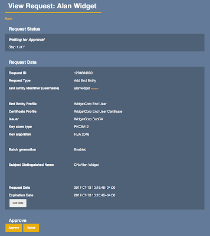

EJBCA RA Management
This section covers EJBCA RA Management tasks and describes the EJBCA menu sections and the functions a user can perform in the EJBCA RA GUI:
User Access
Different menu items will be visible depending on the Users access role.
Front page
The RA front page contains quick links to the most common operations performed by a user:
Making a new certificate request
Checking status of a request, and retrieving the certificate
Requesting revocation of a certificate
Enroll
The Enroll menu includes options for making certificate requests and retrieving (enrolling) certificates issued to the User.
Make New Request
The Make New Request page allows requesting a new certificate. Note that the options available are depending on your role, and when there is only one choice available and thus no selection to be made, the option is not displayed on the page. To view these predefined options, click Show details in the bottom-right of each section.
Select Request Template
Select Certificate Type to choose which type of certificate to request. If you have access to request multiple certificates, the options are available for selection in a list. Note that you will not have to make a selection if you only have access to one certificate type.
Second you select Certificate subtype. The subtype choice exists if there are multiple variants, for example SMIME Signing or Encryption, or different validity periods for TLS certificates. If you only have access to one Certificate subtype, you will not be able to choose anything.
Third you can choose which CA to request the certificate from, if you have access to more than one CA. If only one CA choice is available, you will not be able to choose anything.
Last in the Request Template section you choose if you will provide a CSR or if the CA will generate a keystore, including the private key, for you. If only one choice is available, you will not be able to choose anything.
Upload CSR
If the last choice in the Request Template section was Provided by User, you now get the ability to upload a CSR. Once uploaded some basic information about the CSR, such as the type and length of the public key is displayed.
Select key algorithm
If the last choice in the Request Template section was On Server, you now get the ability to choose key type and key length, within the restrictions set by the policy.
Provide request info
This is the section where you enter you personal data for the request. This includes Distinguished Name fields and Subject Alternative name fields. Only available fields are displayed and an asterisk (*), marks required fields.
Provide User Credentials
The last section to fill in contains your User credentials. This can include a username and enrollment code, or only an enrollment code if the username is automatically generated. The enrollment code will be used when you, at a later stage, retrieve your certificate.
Confirm request
Last there is a summary section of your choices so you can verify the data you entered before confirming the request. As last step you are asked to either Confirm the request to be sent for approvals, or immediately issue the certificate if the certificate can be issued immediately for your role.
Confirm Request: Creates a request for approval and provides you with a Request ID for tracking the request.
Download buttons: Immediately issues a certificate
Use Request ID
This menu selection will let you check status of a request sent for approval, using the Request ID, you were given. If the request is ready for issuance, you will then be able to provide the enrollment code that you either provided yourself or was sent. After giving the Request ID and an enrollment code, your certificate or keystore will be downloaded to you.
Use Username
As an alternative to using a Request ID, you may be provided with a username and an enrollment code by your administrator. These can be used on this screen in order to issue your certificate.
Search
The Search menu allows administrators with appropriate access rights to search for certificates or end entities (users, devices, and so on).
Certificates
Use the search field to search for certificates and show search results as you type. Search is performed over the certificate:
Distinguished Name
Subject Alternative Name
Serial Number
End Entity username that the certificate is issued for
Use the corresponding list menus to narrow the search to a specific End Entity Profile, Certificate Profile, CA, and Certificate Status.
Click Show more options to access time fields to limit the search for certificates issued, expired, or revoked before or after the time specified.
You can also select the maximum number of results that will be shown.
Search results are presented in a list with some certificate fields as columns. Click View on a row to display details of the certificate. While viewing the details, click the link in the bottom to download the certificate or click Show more details to display an ASN.1 dump of the certificate contents.
Requesting revocation
While viewing a specific certificate you can request revocation, or revoke the certificate immediately if you have the proper rights, by selecting revocation reason in the list menu at the Certificate Status section and clicking Revoke.
Requesting key recovery
Viewing a certificate, you can also request key recovery for the selected certificate. This is done by clicking Recover Key, provide a new enrollment code and then click Confirm request. If the operation requires approval, a link will be provided at the bottom of the page along with a request id which is used to check the status of your request. Once the request is approved by another administrator, a new certificate can be enrolled through Enroll > Use Request ID / Username . If the operation does not require approval, a new certificate may be enrolled instantly from Enroll > Use Username .
The Recover Key button is only visible if the logged in Administrator is authorized to perform key recovery and key recovery data exists for the user.
End Entities
Searching for end entities is done as you type in the search field. Search is done over the end entities:
Distinguished Name
Subject Alternative Name
Username
By choosing in the fields below the search field you can narrow the search to a specific:
End Entity Profile
Certificate Profile
CA
End Entity Status
By clicking Show more options you also get access to time fields to limit the search in time:
End entity modified before or after a specific time
You can also select the maximum number of results that will be shown.
Search results are presented in a list with some end entity fields as columns. You can also click View on the right in a row to display details of the end entity.
Manage Requests
The Manage Requests menu functions are used for RA Administrators to approve requests that have been performed by less privileged users, i.e. such requests that require approval by an administrator before the certificate can be issued, a revocation performed etc.
The Manage Requests page contains the following tabs:
To Approve: Lists requests that you as an administrator may approve or deny.
Pending Approval: Lists currently pending requests you have access to view, including those that you may approve yourself.
Processed: Lists past requests you have access to view.
Custom Search: A search screen allowing you to filter and search all requests you have access to view.
To Approve
The tab To Approve shows what approvals request you as an RA Administrator have the possibility to attend to. As an RA Administrator, this is your view to pick up requests to review.
Note that approval requests have an expire period and will disappear from the To Approve list when expired.
Requests to review are listed in a table displaying:
|
Column |
Description |
|
ID |
The request ID |
|
Request Date |
Date and time of the request. |
|
CA |
The CA the request was made for. |
|
Type |
Type of request:
|
|
Name |
Username of the request end entity |
|
Requested by |
Your login |
|
Request Status |
Valid values:
|
|
Review |
Clicking Review displays View Request details about the request and allows you to edit the request. |
View Request
Clicking Review displays View Request details about the request and allows you to edit the request.
Note that if you edit a request, you will not be able to approve the same request since the request will have to be approved by another administrator.

Below the request details may be information to approve or reject for the request. The details to specify for approval depends on the configuration of Approval Profiles in the CA and can be text fields, options, or numbers that you have to specify before clicking Approve or Reject.
If only one approval is required, the request will be Executed after you approve the request. In a multi-step approval process, the request will move to the next administrator to approve the next step. The approval workflow is configured by the CA Administrators.
Pending Approval
If you have made requests yourself, and have privileges to view the Manage Requests page, this tab displays the requests that you have made, and that are waiting for approval by another administrator. If you have requests that are pending approval, a table is shown displaying information about your request, with the same information as for To Approve.
Click Review to the right in the table to view details about your request. To edit your request before it has been approved, click Edit while viewing request details.
Processed
The Processed tab shows requests that you have approved or rejected and allows you to review what has been done.
Custom Search
The Custom Search tab (available as of EJBCA 6.8.0 ) allow searching for approval requests based on:
Request Status
Created on or after
Created on or before
Only requests that expire in a number of days
CA Certificates and CRLs
The CA Certificates and CRLs screen allows downloading CA certificates and CRLs for CAs that you have access to.
The CAs you can access to are listed in a table displaying the following:
|
Column |
Description |
|
Certificate Authority |
Name of Certificate Authority. |
|
CRL |
|
|
Certificate |
|
|
Certificate chain |
Downloads a certificate chain for a sub CA, the sub CA certificate(s) and root CA certificate:
|
|
Browser import |
Downloads the CA certificate with headers to trigger a browser import. |
Download CA Certificate Fingerprint Sheet
To download a YAML text document with the CA Certificate fingerprints of all CAs you have access to, click Download Fingerprints. This is useful during a key ceremony and eliminates the need for downloading CA certificates and computing the fingerprints manually using a third-party tool such as OpenSSL. The fingerprint is computed using SHA-256.
Download CA Certificate Bundle
To download a compressed zip file containing the CA certificates of all CAs you have access to, click Download Certificate Bundle. The certificates in the bundle are provided in binary format (DER).
Role Management
Role management is available in the RA Web as of EJBCA 6.8.0, allowing RA administrators to manage their users and roles without access to the CA. The Role Management tab is visible among the menu items in the RA Web if the logged in administrator has sufficient access rights to manage roles.
RA role management consists of functionality similar to Administrator Roles in the Administrator Web, including:
Viewing existing roles and role members
Creating new roles and namespaces
Adding members to roles
Editing end entity permissions
Edit / Create Role
From the RA Web menu, roles can be added or edited through Role Management > Roles . In the edit page, CAs and End Entity Profile, authorized by the logged in administrator are displayed in the Available box. Moving items to the Allowed box will grant corresponding access to the members of the role. Access may also be granted to other RA related operations using th e End Entity permissions options.
Role Members
Members can be added to an existing role or edited through Role Management > Role Members . Similar to the administrator web, options are available select role, match with attribute and select CA to associate the member with.
Namespaces
A new concept introduced to role management is Namespaces. A role may be associated with a namespace which controls visibility of other roles. Members of a role, belonging to a specific namespace may only view other roles belonging to that namespace. In practice this introduces an option to keep multiple roles on the same CA, with separated visibility to different RA administrators. E.g. it might be desired to keep roles of organization A hidden from the administrators of organization B, even though the belong to the same CA.
Managing Namespaces
Through the edit page displayed when editing or creating a new role, the desired namespace to be associated with the role may be selected from the drop down menu at the top of the page. A new namespace can also be created by selecting Create new namespace from the list menu (if the logged in administrator is authorized to do so).